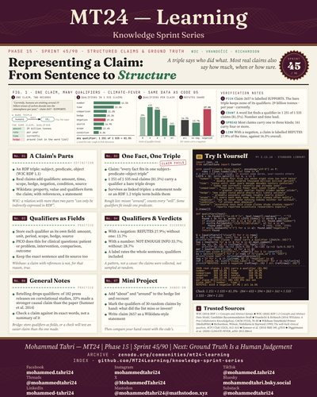
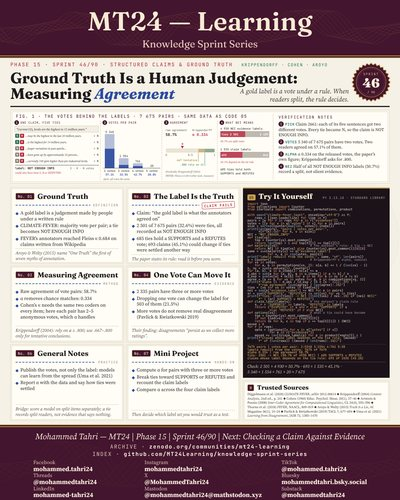
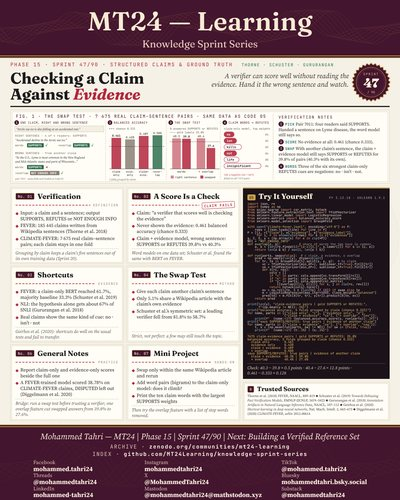
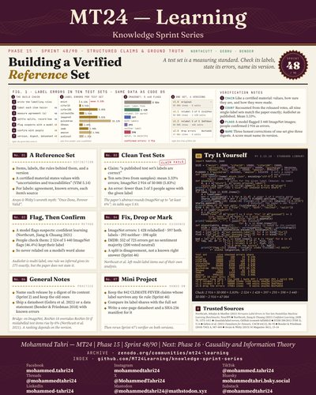

Abstract
This issue follows a claim from a sentence to the test set that scores it. Sprint 45 counted the qualifiers in 1 535 real climate claims. Sprint 46 rebuilt every label of CLIMATE-FEVER from the 18 486 votes behind it and measured agreement. Sprint 47 trained simple verifiers and handed them the wrong evidence. Sprint 48 recounted the label errors of public test sets from the released human votes. Each sprint put a popular claim to code; none held as usually stated.
Highlights
- 451 251 of 1 535 real claims (81.5%) carry a qualifier a bare triple drops.
- 462 501 split votes became NOT ENOUGH INFO: half of all 4 930 such labels.
- 46693 of 1 535 claims (45.1%) could change label if ties were settled another way.
- 47Given another claim’s sentence, the verifier said S or R for 39.8% vs 40.3%.
- 48Ten public test sets, nine recounted from the votes: mean 3.33% label errors.
Figures in words
1 Fig. 1 · Qualifiers Sprint 45
- 1 251 with a qualifier · 284 · 81.5% of 1 535 claims
- number 43.5% · time 33.0% · comparison 21.8%
- a word-list rule, rough in both directions
2 Fig. 2 · What NEI means Sprint 46
- ties 2 501 · 2 429 · 50.7% of 4 930 NEI labels
- α 0.334 (need .800)
3 Fig. 3 · The swap test Sprint 47
- % S or R, right vs swapped sentence
- words: 40.3 · 39.8
- + overlap: 40.4 · 27.6
- claim only: 0.461 (chance 0.333)
4 Fig. 4 · Label errors Sprint 48
- - - mean 3.33% · ImageNet 5.83%
- 10 test sets · grey: AudioSet as published
1 Methods
Four scripts on public data: CLIMATE-FEVER (1 535 claims · 7 675 claim–sentence pairs; Diggelmann et al. 2020) and the Mechanical Turk files of cleanlab/label-errors (Northcutt et al. 2021). Every printed line was re-derived by an independent implementation before rendering; α also by the krippendorff package. No language model was run. Python 3.13.18 · numpy 2.5.3 · scikit-learn 1.9.1.
2 Common Misreadings, Checked
“Every fact fits in one subject–predicate–object triple.”Checked 81.5% of 1 535 real claims carry a qualifier; linked triples can hold them.
W3C RDF 1.2 · Vrandečić & Krötzsch 2014
“The gold label is what the annotators agreed on.”Checked α 0.334; 2 501 ties were recorded as NOT ENOUGH INFO.
Krippendorff 2004 · Diggelmann et al. 2020
“A verifier that scores well is checking the evidence.”Checked Claim only: 0.461 balanced accuracy. Claim + evidence, swapped: S or R in 39.8% vs 40.3%.
Schuster et al. 2019 · Gururangan et al. 2018
“A published test set’s labels are correct.”Checked Ten sets: mean 3.33% label errors (two from samples); ImageNet 5.83%.
Northcutt, Athalye & Mueller 2021
“A model’s flag is enough to relabel an item.”Checked 2 524 of 5 440 ImageNet flags (46.4%) kept their label.
Northcutt, Jiang & Chuang 2021
In This Issue

Representing a Claim: From Sentence to StructureA triple says who did what. Most real claims also say how much, when or how sure.
Ground Truth Is a Human Judgement: Measuring AgreementA gold label is a vote under a rule. When readers split, the rule decides.
Checking a Claim Against EvidenceA verifier can score well without reading the evidence. Hand it the wrong sentence and watch.
Building a Verified Reference SetA test set is a measuring standard. Check its labels, state its errors, name its version.
Now I Can
Turn a claim into fields, measure agreement with α, run a swap test on a verifier and recount a test set’s errors.
Mistakes Avoided
Storing claims without their qualifiers, reading a tie as silent evidence, trusting a score without a claim-only baseline.
Phase Project
A verified CLIMATE-FEVER subset: the 842 claims whose label survives any tie rule, with a datasheet and a SHA-256 manifest.
R References
- W3C (2026) RDF 1.2 Concepts
- Vrandečić & Krötzsch (2014) CACM 57(10)
- Richardson et al. (1995) ACP J Club 123(3)
- Sumner et al. (2014) BMJ 349
- Diggelmann et al. (2020) arXiv 2012.00614
- Krippendorff (2004) Content Analysis
- Thorne et al. (2018) NAACL
- Aroyo & Welty (2015) AI Magazine 36(1)
- Pavlick & Kwiatkowski (2019) TACL 7
- Uma et al. (2021) JAIR 72
- Schuster et al. (2019) EMNLP-IJCNLP
- Gururangan et al. (2018) NAACL
- Geirhos et al. (2020) Nat. Mach. Intell. 2
- Northcutt, Athalye & Mueller (2021) NeurIPS
- Northcutt, Jiang & Chuang (2021) JAIR 70
- Gebru et al. (2021) CACM 64(12)
- JCGM 200:2012